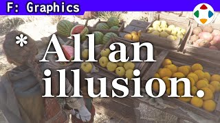
速览
今天的游戏世界真的做得很好，风景之美让人觉得比真的还漂亮。但从制作方看，游戏世界是布景，是片场：没有质量，什么都没有。不放判定，地形就会乏味地嗖一下穿过去；放手了没有程序，连掉落都不会。只是 CG 多边形的组合，没有质量、干巴巴的东西。当然玩游戏时不会这么想——因为不只是画面，声音、程序、参数等各种要素让它带上了实感。本来不存在，却让人感觉它就在那里——综合来说，这就是「表现」。这次放在图形分类，但所有要素都适用：在显示器里表现仿佛有生命的世界，图形设计师制作时最好注意这些。例如做桌子和上面的小物件时，不要以为只是做一个和桌子一样的东西：要控制它的质感、在光源下的样子、量感、考虑生活感的摆放等。就形状而言，普通桌子和微缩桌子是同一个东西；但其表现和组合决定了那个世界是否让人觉得真的存在。要拉远视角俯瞰，让不存在的东西显得存在。容易被忽视的是空气的流动，因为平时看不见。顺带介绍：《大乱斗》里环境风会让摆动物飘动，爆炸附近也会产生微风。
1. 游戏世界是布景 0:03
今天的游戏世界真的做得很好，有的作品风景美得让人觉得比真的还漂亮。但从制作方看，游戏世界是布景、是片场，没有质量，什么都没有。
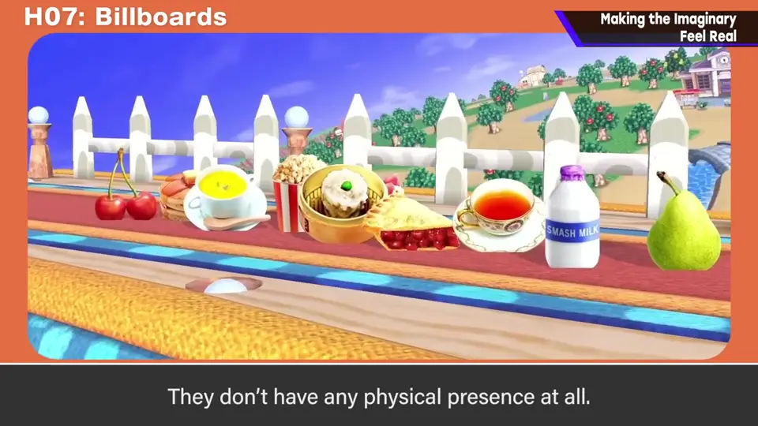
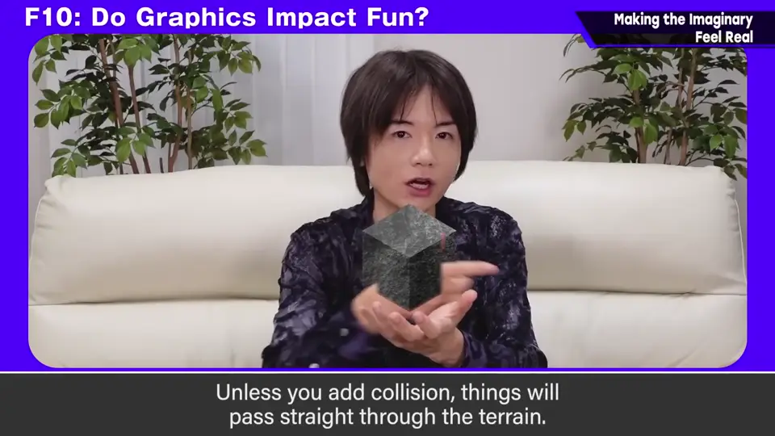
不放判定，地形就会乏味地嗖一下穿过去；放手了没有程序，连掉落都不会。只是 CG 多边形的组合，没有质量、干巴巴的东西。
2. 什么让它显得真实 0:40
当然玩游戏时不会这么想。那是因为不只是画面，声音、程序、参数等各种要素让它带上了实感。
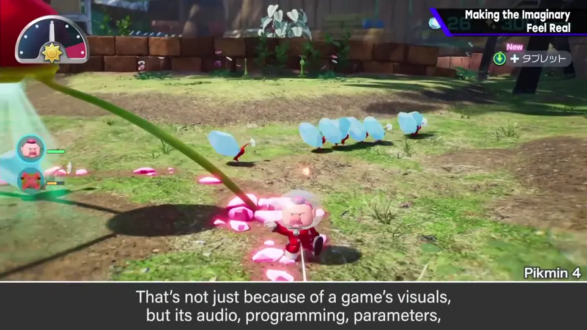
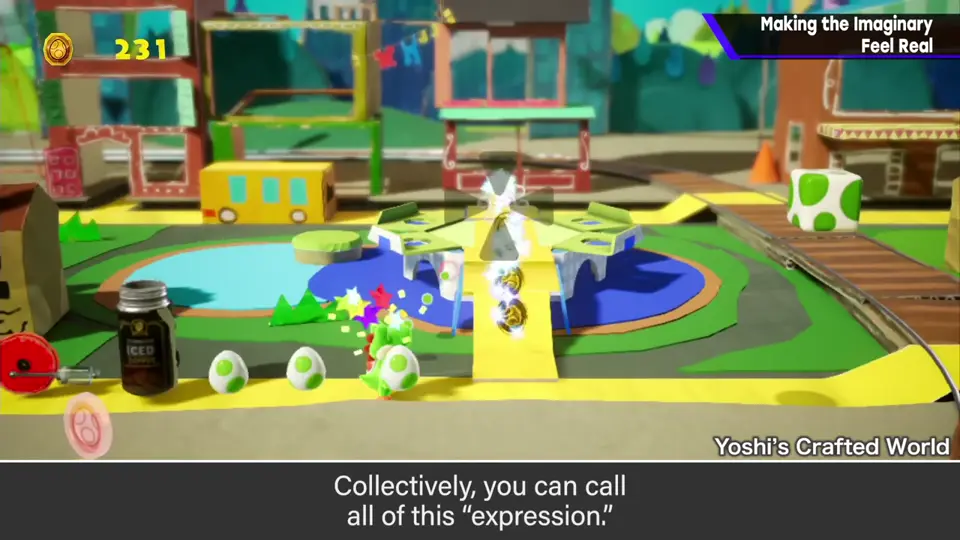
这次放在图形分类，但所有要素都适用：在显示器里表现仿佛有生命的世界。
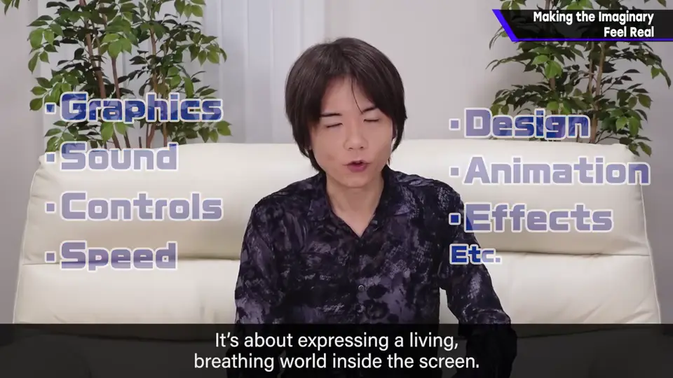
3. 做桌子不只是做桌子 1:20
图形设计师最好注意这些。例如做桌子和上面的小物件时，不要以为只是做一个像桌子的东西：
- 质感
- 在光源下的样子
- 量感
- 考虑生活感的摆放
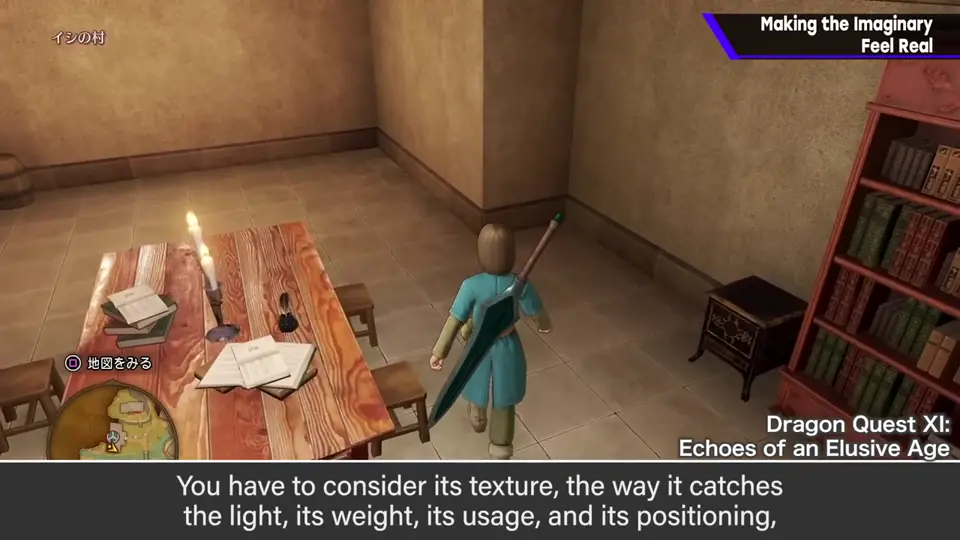
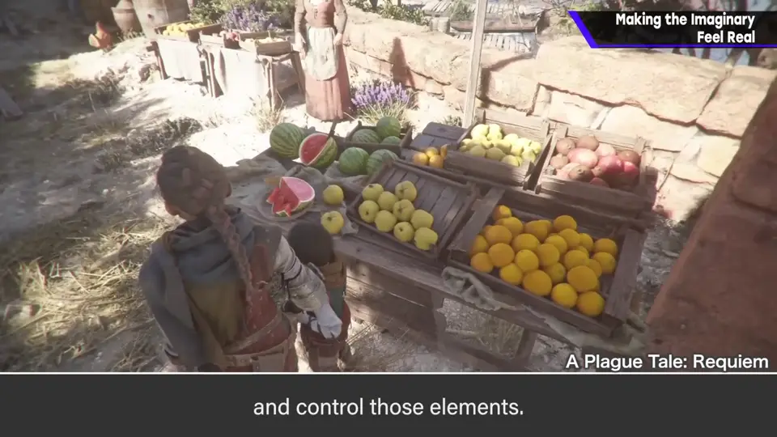
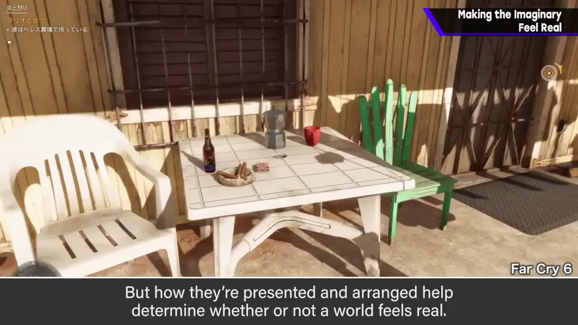
就形状而言，普通桌子和微缩桌子是同一个东西；但其表现与组合，决定了那个世界是否让人觉得真的存在。
4. 空气的流动 2:02
容易被忽视的是空气的流动，因为平时看不见。
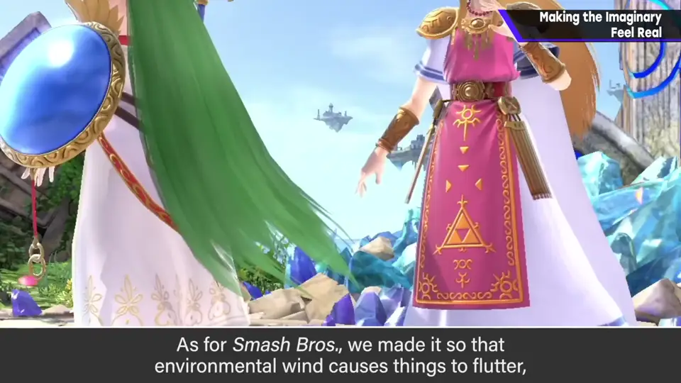
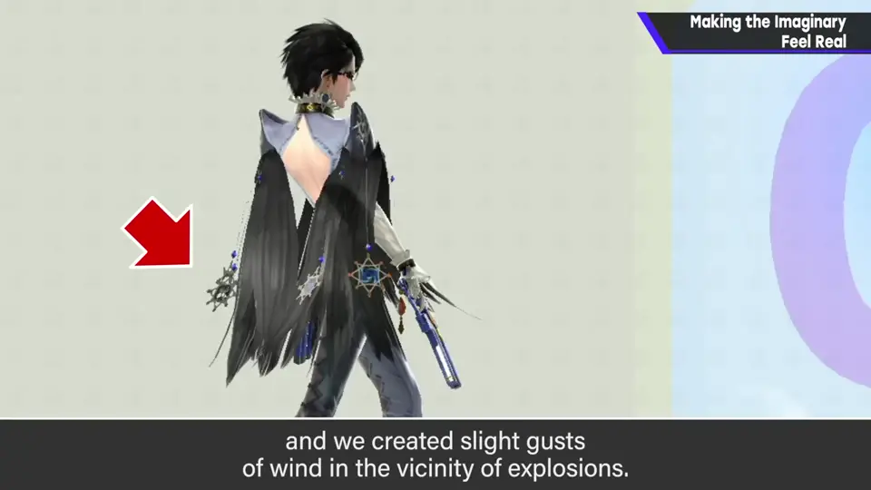
顺带介绍：《大乱斗》里环境风会让摆动物飘动，爆炸附近也会产生微风。
自测题
1. 为什么说游戏世界是「布景」？
没有质量；不放判定会被穿过，没有程序连掉落都不会，只是多边形组合。 0:20
2. 樱井所说的「表现」是什么？
让本不存在的东西，感觉就在那里——由画面、声音、程序、参数等综合实现。 1:00
3. 容易被忽视的真实感要素是什么？《大乱斗》怎么做？
空气流动；环境风让摆动物飘动，爆炸附近产生微风。 2:05